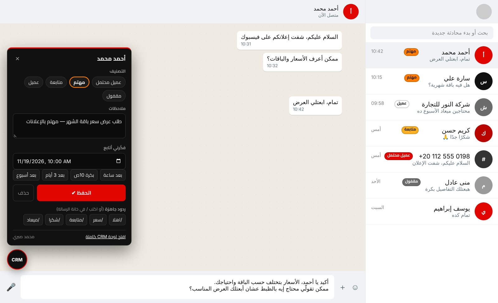

أدوات المسوّق اليومية · Marketing Tools
أدوات تسويق
مجانية.بتوفّر يومك.
14 أدوات اتعملت من شغل تسويق حقيقي: واتساب، والمحتوى، والإعلانات، والتحليل. كلها مجانية، ومن غير اشتراكات، وبياناتك بتفضل على جهازك.



أدوات
على 6 مراحل من المنظومة
جنيه اشتراكات
ولا API مدفوع
بياناتك عندك
مفيش سيرفر بيشوف حاجة
تشتغل أونلاين
جرّبها من غير تحميل
المنظومة · Market-to-Measurement
مش مجرد أدوات.منظومة من 8 مراحل.
كل أداة بتخدم مرحلة من الـ Market-to-Measurement Framework: من ربط التسويق بالبيزنس، لحد القياس والتطوير.
الأدوات · The Toolkit
كل أداة لوحدها.نزّل اللي محتاجه بس.
ContactHarvest
كل أرقام واتساب اللي اتراسلت معاها في شيت Excel
التفاصيل والتحميلAdVault
أرشيف لإعلانات المنافسين من Meta Ad Library
التفاصيل والتحميلPixelScope
اعرف أي موقع بيستخدم أنهي Pixel وأكواد تتبع
التفاصيل والتحميلGrowthScore
قيّم تسويق شركتك من 100 في 5 دقايق
التفاصيل والتحميلDiscountCheck
الخصم ده مكسب ولا خسارة؟
التفاصيل والتحميلIdeaDrop
احفظ أي فكرة على Notion بضغطة
التفاصيل والتحميلReplyKit
ردود جاهزة في واتساب ويب باسم العميل
التفاصيل والتحميلChatCRM
CRM صغير جوه واتساب ويب
التفاصيل والتحميلChatLink QR
لينك واتساب برسالة جاهزة + QR لكل حملة
التفاصيل والتحميلPostCheck
راجع الكابشن قبل ما تنشر
التفاصيل والتحميلBriefBuilder
بريف المحتوى الكامل + برومت التصميم في دقيقة
التفاصيل والتحميلSocialSizer
صورة واحدة ← كل مقاسات السوشيال
التفاصيل والتحميلUTM Studio
لينكات UTM بنظام تسمية ثابت
التفاصيل والتحميلCampaignMath
كل مؤشرات الحملة + الميزانية من الهدف
التفاصيل والتحميلالتثبيت · Load unpacked
من غير Store.5 خطوات وتشتغل.
الأدوات بتتثبّت من فولدر على جهازك. اختار الأداة، والدليل هيوريك كل خطوة على شاشة كروم.
ويندوز: كليك يمين على الملف ← Extract All. ماك: دبل كليك. هيطلعلك فولدر اسمه .
اكتب العنوان ده في كروم ودوس Enter. أو من القايمة ⋮ ← Extensions ← Manage Extensions.
الزرار فوق على اليمين في صفحة الإضافات. وده بيفعّل تثبيت الإضافات من فولدر.
اختار الفولدر نفسه (اللي جواه manifest.json)، مش ملف الـ zip.
دوس على أيقونة البازل 🧩 ← الدبوس جنب ، عشان تفضل قدامك على طول.
جرّب أونلاين · No install
جرّبها دلوقتي.من غير ما تنزّل حاجة.
ChatLink QR
لينك واتساب برسالة جاهزة + QR لكل حملة
جرّبها دلوقتيPostCheck
راجع الكابشن قبل ما تنشر
جرّبها دلوقتيUTM Studio
لينكات UTM بنظام تسمية ثابت
جرّبها دلوقتيCampaignMath
كل مؤشرات الحملة + الميزانية من الهدف
جرّبها دلوقتيBriefBuilder
بريف المحتوى الكامل + برومت التصميم في دقيقة
جرّبها دلوقتيDiscountCheck
الخصم ده مكسب ولا خسارة؟
جرّبها دلوقتيGrowthScore
قيّم تسويق شركتك من 100 في 5 دقايق
جرّبها دلوقتيSocialSizer
صورة واحدة ← كل مقاسات السوشيال
جرّبها دلوقتيعايز كله؟
Marketer's Toolkit
كل الأدوات في إضافة واحدة: واتساب، والمحتوى، والتحليل. للي عايز كله من غير ما ينزّل عشر إضافات.
مين ورا الأدوات · About
محمد صبري.Strategic Marketing & Growth Architect
التسويق عندي منظومة قرارات، مش مجموعة أنشطة. شغلي إني أحوّل التسويق من أنشطة متفرقة لمنظومة استراتيجية: بتبدأ بفهم السوق، وتنتهي بالتنفيذ والقياس والنمو.
والأدوات دي جزء من الفكرة دي: كل أداة بتشيل حتة من الشغل المتكرر، عشان وقتك يروح للقرار.
اعرف أكتر عن محمدتواصل · Contact
خلّينا نتكلم.من فهم السوق إلى نتائج قابلة للقياس.
لو محتاج تحوّل التسويق عندك من أنشطة متفرقة لمنظومة واضحة، أو عندك سؤال عن أي أداة، كلّمني.
فيه حاجة بتعملها كل يوم بإيدك وتاخد وقت؟ قولّي عليها، وممكن تبقى الأداة الجاية.
ابعت اقتراحكابدأ دلوقتي
التسويق منظومة قرارات.مش مجموعة أنشطة.
نزّل الأداة اللي محتاجها، أو الكل مرة واحدة.